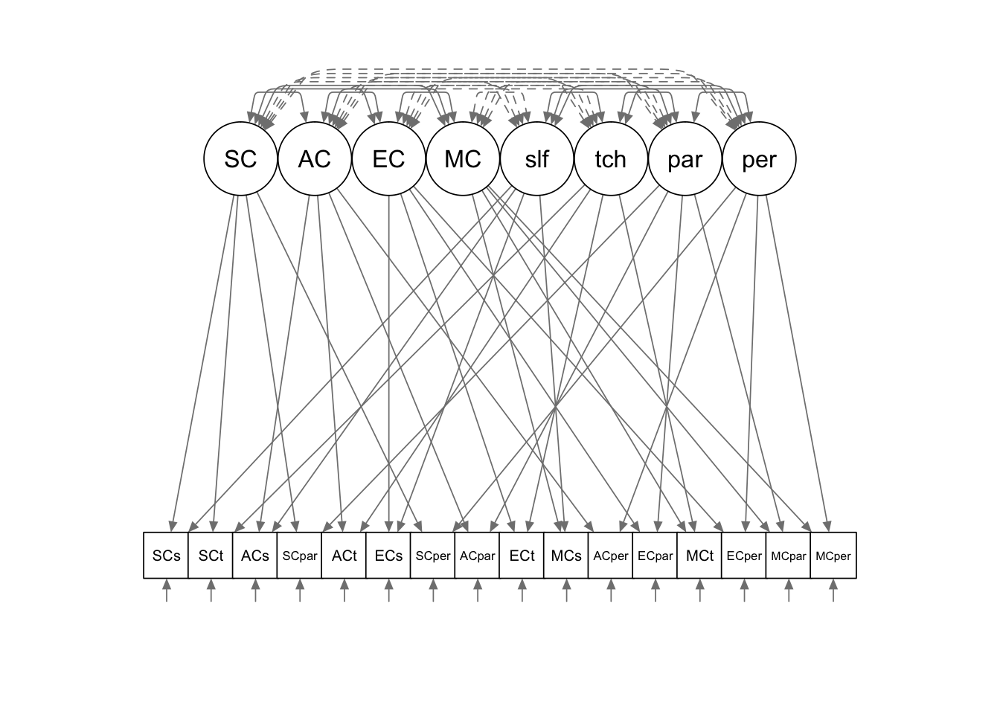

In this tutorial, we are going to use lavaan for
multitrait-multimethod analysis.
library(lavaan)
library(semPlot)For this example, our data is a correlation matrix for 12 observed variables. For more information about the data, please refer back to the course slides. As we have done in the previous examples, we need to convert the correlation matrix to a variance-covariance matrix.
# lower half of the correlation matrix
cormat <- '
1.00
.09 1.00
.26 .29 1.00
-.03 .54 .01 1.00
.12 .12 .12 .01 1.00
.00 .43 .07 .43 .26 1.00
.03 .35 .07 .28 .41 .51 1.00
-.09 .42 .03 .48 .15 .72 .42 1.00
.35 .08 .12 -.02 .14 .08 .04 -.02 1.00
.12 .43 .24 .30 .18 .34 .31 .46 .18 1.00
.13 .26 .43 -.01 .07 .15 .17 .20 .29 .47 1.00
.05 .43 .05 .57 .13 .46 .37 .64 .07 .52 .20 1.00
.28 .19 .01 .14 .09 .06 -.03 .11 .18 .12 .02 .13 1.00
.11 .35 .07 .33 .13 .30 .17 .40 .13 .37 .28 .32 .62 1.00
.29 .17 .09 .09 .21 .05 .03 .09 .20 .15 .14 .10 .73 .64 1.00
.07 .40 .32 .32 .07 .32 .17 .41 .03 .28 .13 .35 .46 .66 .47 1.00
'
# standard deviations
sdev <- c(2.46, 1.76, 2.74, 2.04, 2.13, 4.30, 1.90, 1.90, 2.63, 1.89, 2.84, 2.34, 2.27, 4.86, 2.66, 1.94)
Cmat <- getCov(cormat)
Dmat <- diag(sdev)
covmat <- Dmat %*% Cmat %*% Dmat
# assign row and column names to the covariance matrix
colnames(covmat) <- rownames(covmat) <- c("SCself", "ACself", "ECself", "MCself",
"SCteach", "ACteach", "ECteach", "MCteach",
"SCpar", "ACpar", "ECpar", "MCpar",
"SCpeer", "ACpeer", "ECpeer", "MCpeer")We use the following model syntax to specify the MTMM model. For all the trait latent factors and the methods latent factors, we free the first factor loadings. Instead, we fix their variances to be 1. We also constrain the covariances between the trait factors and methods factors to be 0.
mtmm.model <- '
# Trait factors
SC =~ NA*SCself + SCteach + SCpar + SCpeer
AC =~ NA*ACself + ACteach + ACpar + ACpeer
EC =~ NA*ECself + ECteach + ECpar + ECpeer
MC =~ NA*MCself + MCteach + MCpar + MCpeer
# Methods factors
self =~ NA*SCself + ACself + ECself + MCself
teach =~ NA*SCteach + ACteach + ECteach + MCteach
par =~ NA*SCpar + ACpar + ECpar + MCpar
peer =~ NA*SCpeer + ACpeer + ECpeer + MCpeer
# Variances of the latent factors
SC~~1*SC
AC~~1*AC
EC~~1*EC
MC~~1*MC
self~~1*self
teach~~1*teach
par~~1*par
peer~~1*peer
# Covariances among the latent factors
SC ~~ 0*self + 0*teach + 0*par + 0*peer
AC ~~ 0*self + 0*teach + 0*par + 0*peer
EC ~~ 0*self + 0*teach + 0*par + 0*peer
MC ~~ 0*self + 0*teach + 0*par + 0*peer
'mtmm.fit <- sem(mtmm.model, sample.cov = covmat, sample.nobs = 158)summary(mtmm.fit, fit.measures = T, standardized = T)## lavaan 0.6.15 ended normally after 80 iterations
##
## Estimator ML
## Optimization method NLMINB
## Number of model parameters 60
##
## Number of observations 158
##
## Model Test User Model:
##
## Test statistic 168.057
## Degrees of freedom 76
## P-value (Chi-square) 0.000
##
## Model Test Baseline Model:
##
## Test statistic 1121.639
## Degrees of freedom 120
## P-value 0.000
##
## User Model versus Baseline Model:
##
## Comparative Fit Index (CFI) 0.908
## Tucker-Lewis Index (TLI) 0.855
##
## Loglikelihood and Information Criteria:
##
## Loglikelihood user model (H0) -5349.680
## Loglikelihood unrestricted model (H1) -5265.651
##
## Akaike (AIC) 10819.360
## Bayesian (BIC) 11003.116
## Sample-size adjusted Bayesian (SABIC) 10813.187
##
## Root Mean Square Error of Approximation:
##
## RMSEA 0.088
## 90 Percent confidence interval - lower 0.070
## 90 Percent confidence interval - upper 0.105
## P-value H_0: RMSEA <= 0.050 0.001
## P-value H_0: RMSEA >= 0.080 0.767
##
## Standardized Root Mean Square Residual:
##
## SRMR 0.066
##
## Parameter Estimates:
##
## Standard errors Standard
## Information Expected
## Information saturated (h1) model Structured
##
## Latent Variables:
## Estimate Std.Err z-value P(>|z|) Std.lv Std.all
## SC =~
## SCself 1.320 0.251 5.252 0.000 1.320 0.534
## SCteach 0.572 0.208 2.749 0.006 0.572 0.267
## SCpar 1.570 0.277 5.658 0.000 1.570 0.598
## SCpeer 0.283 0.168 1.687 0.092 0.283 0.126
## AC =~
## ACself 0.877 0.156 5.621 0.000 0.877 0.492
## ACteach 1.707 0.382 4.470 0.000 1.707 0.398
## ACpar 1.215 0.162 7.505 0.000 1.215 0.642
## ACpeer 2.395 0.320 7.490 0.000 2.395 0.493
## EC =~
## ECself 1.412 0.242 5.843 0.000 1.412 0.515
## ECteach 0.513 0.170 3.025 0.002 0.513 0.267
## ECpar 2.364 0.271 8.733 0.000 2.364 0.834
## ECpeer 0.558 0.185 3.022 0.003 0.558 0.209
## MC =~
## MCself 0.853 0.183 4.655 0.000 0.853 0.419
## MCteach 1.253 0.148 8.478 0.000 1.253 0.677
## MCpar 1.282 0.209 6.128 0.000 1.282 0.551
## MCpeer 0.947 0.146 6.498 0.000 0.947 0.489
## self =~
## SCself 0.441 0.240 1.837 0.066 0.441 0.178
## ACself 0.986 0.166 5.942 0.000 0.986 0.554
## ECself 0.143 0.266 0.535 0.593 0.143 0.052
## MCself 1.441 0.192 7.489 0.000 1.441 0.708
## teach =~
## SCteach 0.843 0.190 4.430 0.000 0.843 0.393
## ACteach 3.215 0.344 9.350 0.000 3.215 0.750
## ECteach 1.128 0.163 6.923 0.000 1.128 0.588
## MCteach 1.096 0.141 7.773 0.000 1.096 0.592
## par =~
## SCpar 0.414 0.258 1.609 0.108 0.414 0.158
## ACpar 0.622 0.194 3.203 0.001 0.622 0.329
## ECpar 0.118 0.273 0.433 0.665 0.118 0.042
## MCpar 1.758 0.294 5.987 0.000 1.758 0.756
## peer =~
## SCpeer 1.886 0.155 12.164 0.000 1.886 0.839
## ACpeer 3.511 0.319 11.011 0.000 3.511 0.723
## ECpeer 2.190 0.182 12.055 0.000 2.190 0.823
## MCpeer 1.085 0.139 7.795 0.000 1.085 0.560
##
## Covariances:
## Estimate Std.Err z-value P(>|z|) Std.lv Std.all
## SC ~~
## self 0.000 0.000 0.000
## teach 0.000 0.000 0.000
## par 0.000 0.000 0.000
## peer 0.000 0.000 0.000
## AC ~~
## self 0.000 0.000 0.000
## teach 0.000 0.000 0.000
## par 0.000 0.000 0.000
## peer 0.000 0.000 0.000
## EC ~~
## self 0.000 0.000 0.000
## teach 0.000 0.000 0.000
## par 0.000 0.000 0.000
## peer 0.000 0.000 0.000
## MC ~~
## self 0.000 0.000 0.000
## teach 0.000 0.000 0.000
## par 0.000 0.000 0.000
## peer 0.000 0.000 0.000
## SC ~~
## AC 0.164 0.149 1.102 0.270 0.164 0.164
## EC 0.525 0.118 4.463 0.000 0.525 0.525
## MC -0.193 0.156 -1.239 0.216 -0.193 -0.193
## AC ~~
## EC 0.756 0.084 9.050 0.000 0.756 0.756
## MC 0.858 0.056 15.259 0.000 0.858 0.858
## EC ~~
## MC 0.391 0.115 3.414 0.001 0.391 0.391
## self ~~
## teach 0.506 0.101 5.008 0.000 0.506 0.506
## par 0.600 0.125 4.815 0.000 0.600 0.600
## peer 0.302 0.103 2.926 0.003 0.302 0.302
## teach ~~
## par 0.520 0.117 4.446 0.000 0.520 0.520
## peer 0.156 0.102 1.538 0.124 0.156 0.156
## par ~~
## peer 0.178 0.107 1.662 0.097 0.178 0.178
##
## Variances:
## Estimate Std.Err z-value P(>|z|) Std.lv Std.all
## SC 1.000 1.000 1.000
## AC 1.000 1.000 1.000
## EC 1.000 1.000 1.000
## MC 1.000 1.000 1.000
## self 1.000 1.000 1.000
## teach 1.000 1.000 1.000
## par 1.000 1.000 1.000
## peer 1.000 1.000 1.000
## .SCself 4.168 0.665 6.267 0.000 4.168 0.683
## .SCteach 3.560 0.459 7.757 0.000 3.560 0.774
## .SCpar 4.253 0.806 5.277 0.000 4.253 0.617
## .SCpeer 1.410 0.281 5.022 0.000 1.410 0.279
## .ACself 1.432 0.234 6.119 0.000 1.432 0.451
## .ACteach 5.111 1.207 4.236 0.000 5.111 0.278
## .ACpar 1.720 0.247 6.970 0.000 1.720 0.480
## .ACpeer 5.547 1.059 5.239 0.000 5.547 0.235
## .ECself 5.490 0.713 7.705 0.000 5.490 0.732
## .ECteach 2.150 0.311 6.910 0.000 2.150 0.583
## .ECpar 2.439 0.981 2.487 0.013 2.439 0.303
## .ECpeer 1.977 0.360 5.490 0.000 1.977 0.279
## .MCself 1.342 0.394 3.405 0.001 1.342 0.324
## .MCteach 0.652 0.185 3.516 0.000 0.652 0.190
## .MCpar 0.679 0.876 0.774 0.439 0.679 0.125
## .MCpeer 1.674 0.240 6.985 0.000 1.674 0.447You can use the semPlot package to draw the diagram for
the model you fitted. You can experiment with the arguments to get a
better layout of the plot. Some examples are available at the
developer’s website: http://sachaepskamp.com/semPlot.
semPaths(mtmm.fit, title = FALSE, curvePivot = TRUE, optimizeLatRes = T, style = "lisrel")